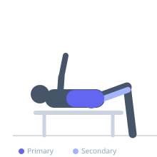
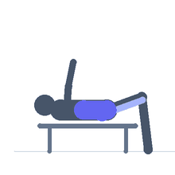

Exercise guide / Back Extension (45-Degree Hyperextension)
Back Extension (45-Degree Hyperextension)
The 45-degree back extension is performed on a hyperextension bench and trains hip extension and spinal erector function simultaneously. The lifter flexes forward at the hip and spine under gravity then extends back to neutral or slightly beyond, challenging the erector spinae, gluteus maximus, and hamstrings through a moderate range of motion. This exercise is a primary developer of the posterior chain when performed with controlled technique.
Primary muscles
erector spinae
gluteus maximus
Secondary muscles
biceps femoris long head
semitendinosus
Stabilizers
transverse abdominis
Equipment
Hyperextension Bench (45°)
Optional
Roman Chair (Hyperextension Bench 90°)


Starting position
- Position yourself on the 45-degree hyperextension bench with the front of the thighs resting on the pads. Hook the ankles behind the foot supports. Cross arms over the chest or place hands behind the head. The body should form a straight line in the starting position.
Setup
- Adjust the bench pad height so the hip crease is just above or at the top of the pad — this allows full range of hip flexion. Secure the ankles firmly.
Steps
- Step 1: Begin in the neutral starting position — body in a straight line from head to hips.
- Step 2: Slowly lower the torso toward the floor by hinging at the hips, allowing the spine to flex slightly.
- Step 3: Lower until a full stretch is felt in the glutes and hamstrings, or the torso is roughly perpendicular to the floor.
- Step 4: Drive the hips into extension and raise the torso back to neutral by contracting the glutes and erectors.
- Step 5: At the top, the body should return to a neutral straight line — do not hyperextend the lumbar spine aggressively.
Coaching cues
- Squeeze the glutes at the top — this cues hip extension rather than lower back arching
- Think of your body as a pendulum hinging at the hip
- Stop when your body is straight — do not arch further
Breathing
- Inhale as you lower the torso. Exhale as you extend back to neutral.
Range of motion
- From torso perpendicular to the floor at the bottom to neutral body alignment at the top. Some lifters may extend slightly past neutral — avoid aggressive lumbar hyperextension.
Tempo
- 2-0-2-1 (2s lower, 2s raise, 1s hold at top)
Common mistakes
- Hyperextending the lumbar spine aggressively at the top — stop at neutral or just slightly above
- Rounding the upper back excessively at the bottom, which may stress the thoracic spine
- Using momentum to swing up rather than controlled muscle contraction
Safety
- Avoid excessive spinal hyperextension at the top — this loads the facet joints unnecessarily
- If using added weight, hold it at the chest rather than behind the head to reduce cervical strain
- Those with existing lower back issues should consult a healthcare professional before performing this exercise
Training
- strength: 8–12 reps
- hypertrophy: 12–20 reps
- endurance: 20–30 reps
- strength: 3–4 sets
- hypertrophy: 3–4 sets
- endurance: 2–3 sets
- Rest: {'strength': 90, 'hypertrophy': 60, 'endurance': 30}